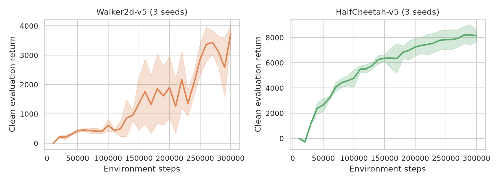
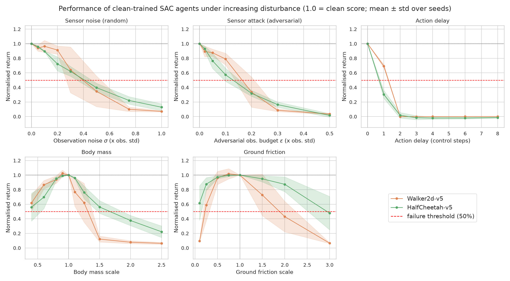
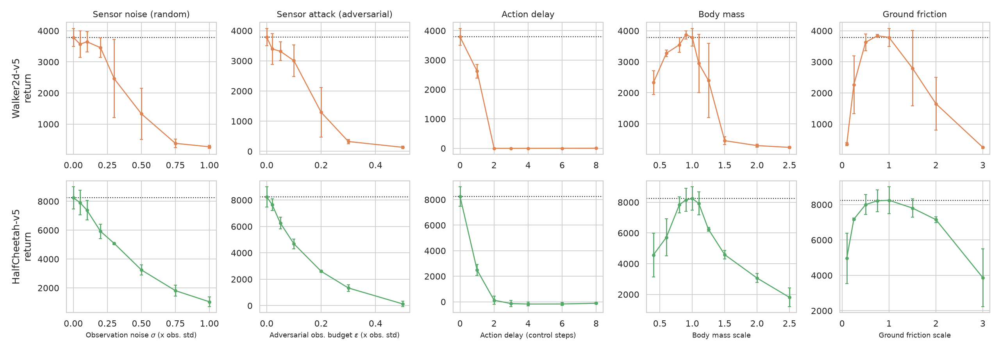
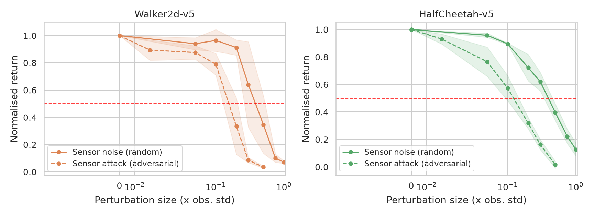
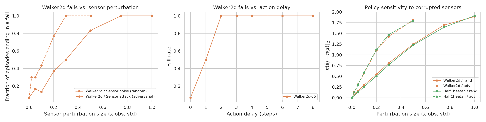
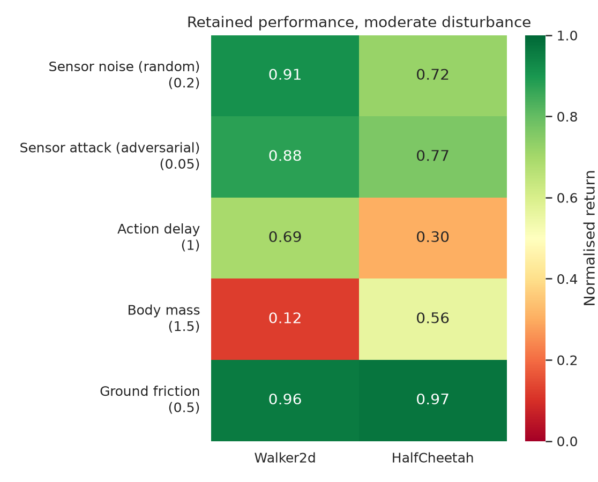
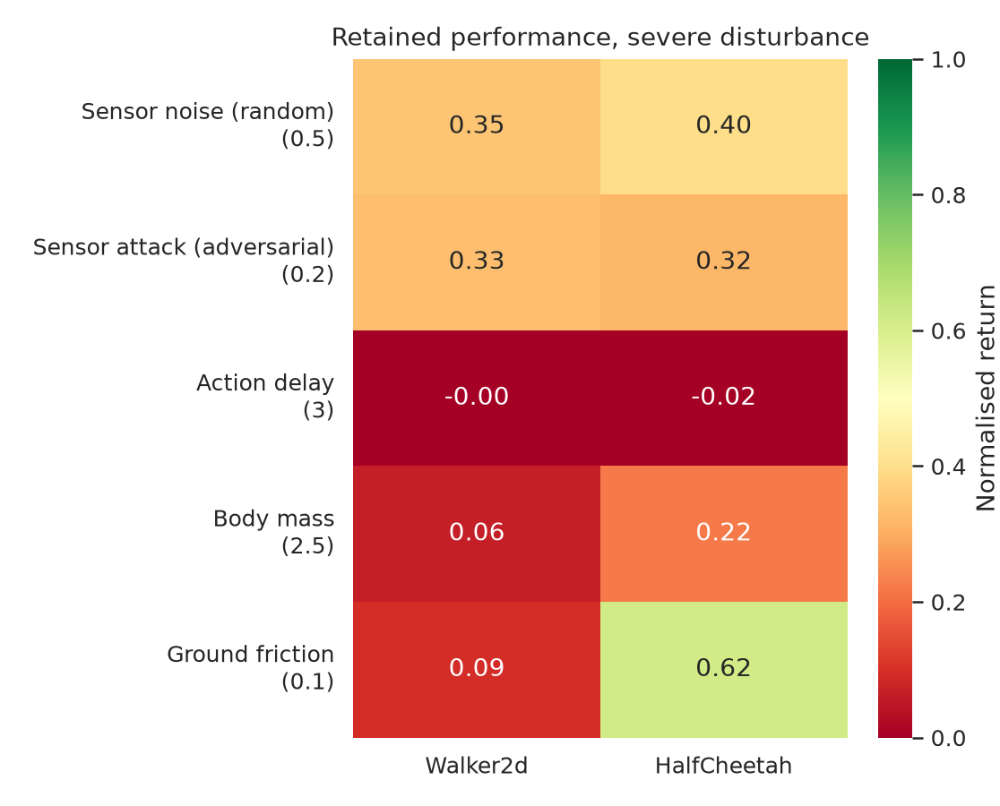

2023B5A71089P) • Department of Computer ScienceIn standard Reinforcement Learning, an agent is trained and tested in the exact same Markov Decision Process (MDP):
When deployed on a physical system ($M_{\mathrm{test}} \neq M_{\mathrm{train}}$), three foundational assumptions break:
Both environments share the exact same dimensions (17-D continuous state space $\mathbb{R}^{17}$, 6-D continuous action space $[-1, 1]^6$), isolating the role of mechanical stability:
| Environment | State $\mathcal{S}$ | Action $\mathcal{A}$ | Control Step $\Delta t$ | Mechanical Stability & Failure Mode |
|---|---|---|---|---|
Walker2d-v5 (Bipedal Walker) |
$\mathbb{R}^{17}$ | $[-1, 1]^6$ | 8 ms | Unstable: Must actively balance its torso; terminates early if it falls. |
HalfCheetah-v5 (Planar Runner) |
$\mathbb{R}^{17}$ | $[-1, 1]^6$ | 50 ms | Mechanically Stable: Cannot fall (always runs 1,000 steps); tests gait coordination. |

| Environment | Clean Baseline Return (Mean ± Std) | Mean Episode Length | Clean Fall Rate |
|---|---|---|---|
HalfCheetah-v5 |
8245.5 ± 765.0 | 1000.0 steps | 0.0% (cannot fall) |
Walker2d-v5 |
3788.3 ± 287.6 | 980.2 steps | 6.7% |
We freeze the trained Actor policy $\pi_\theta(s)$ and stress-test it across 5 graded disturbances spanning 3 channels (2,580 evaluation episodes using Common Random Numbers so initial states are identical across all tests):
| # | Channel | Disturbance | Mathematical Formulation | Intensity Unit ($\epsilon$) | Effect on MDP |
|---|---|---|---|---|---|
| 1 | Sensor | Random Noise (obs_noise) |
$\tilde s_t = s_t + \epsilon \sigma_s \odot \mathcal{N}(0, I)$ | Multiple of state std $\sigma_s$ | Corrupts policy input $\pi(\tilde s_t)$ only; true physics unchanged. |
| 2 | Sensor | Adversarial Attack (obs_adv) |
$\tilde s_t = s_t + \arg\min_{\lvert\delta_i\rvert \le \epsilon \sigma_{s,i}} Q(s_t, \pi(s_t + \delta))$ | Multiple of state std $\sigma_s$ | 10-step White-Box PGD finds worst-case sensor illusion. |
| 3 | Actuator | Action Delay (act_delay) |
$\tilde a_t = a_{t-\epsilon}$ (FIFO queue) | Control steps ($0, 1, 2, 3, 4$) | Breaks Markov property; policy acts on stale state. |
| 4 | Physics | Body Mass (mass) |
$m_b \leftarrow \epsilon m_b, \quad I_b \leftarrow \epsilon I_b$ | Multiplier (0.4× to 2.5×) | Alters true transition kernel $P_{\mathrm{test}}(s' \mid s, a)$. |
| 5 | Physics | Ground Friction (friction) |
$\mu_{\mathrm{slide}} \leftarrow \epsilon \mu_{\mathrm{slide}}$ | Multiplier (0.1× to 3.0×) | Alters foot-ground contact dynamics $P_{\mathrm{test}}(s' \mid s, a)$. |
Note: Why is Reward Corruption not tested here? Because at test time, each disturbance is evaluated independently on frozen network weights where $\pi_\theta(s)$ never reads rewards $r_t$. Reward corruption only affects training-time Bellman updates.
We normalize every perturbed score by the agent's own clean baseline score ($\bar J = J_{\mathrm{perturbed}} / J_{\mathrm{clean}}$) and measure:


| Disturbance Type | Direction / Unit | Walker2d-v5 ($\epsilon_{80}$ / $\epsilon_{50}$) |
HalfCheetah-v5 ($\epsilon_{80}$ / $\epsilon_{50}$) |
Key Observation |
|---|---|---|---|---|
1. Sensor Noise (obs_noise) |
$\sigma$ (in units of $\sigma_s$) | 0.24 / 0.40 | 0.16 / 0.41 | Gradual decay; fails at ~40% sensor noise. |
2. Sensor Attack (obs_adv) |
$\epsilon$ (in units of $\sigma_s$) | 0.09 / 0.16 | 0.04 / 0.13 | 2.4× to 3.2× deadlier than random noise! |
3. Action Delay (act_delay) |
Control steps | 0.65 / 1.28 | 0.29 / 0.72 | Most destructive: 1 step drops 31%–70%; 2 steps = 0%. |
4. Body Mass (mass) |
Heavier ($\uparrow$) | ×1.09 / ×1.31 | ×1.22 / ×1.67 | Heavy loads saturate motor torques and cause collapse. |
4. Body Mass (mass) |
Lighter ($\downarrow$) | ×0.55 / Never | ×0.68 / Never | Strongly asymmetric: lighter mass never drops below 50%. |
5. Ground Friction (friction) |
Slippery ($\downarrow$) | ×0.39 / ×0.22 | ×0.21 / Never | Walker2d slips and falls on ice; HalfCheetah keeps 62%! |
5. Ground Friction (friction) |
Sticky ($\uparrow$) | ×1.37 / ×1.88 | ×2.19 / ×2.94 | High friction trips bipedal foot clearance faster. |

HalfCheetah-v5, an adversarial nudge of just 4.4% of 1 standard deviation ($\epsilon_{80} = 0.044$) already wipes out 20% of total return!
Walker2d-v5):
Walker2d-v5 falls in only 6.7% of episodes.

HalfCheetah-v5 cannot fall, it fails faster per step ($\epsilon_{50}=0.72$) than bipedal Walker2d-v5 ($\epsilon_{50}=1.28$) because its control step is 50 ms vs. 8 ms (6.25× longer physical lag per step).